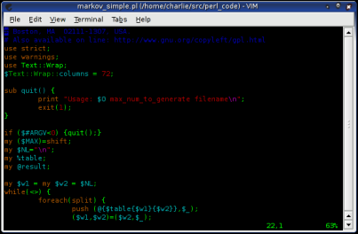

Official Perl hackers Webpage
Real Ultimate Power
Hi, this site is all about Perl hackers, REAL PERL HACKERS. This site is awesome. My name is Charlie and I can't stop thinking about Perl hackers. These guys are cool; and by cool, I mean totally sweet.
Facts:
1. Perl hackers are mammals.
2. Perl hackers use obfuscated syntax ALL the time.
3. The purpose of the Perl hacker is to scan arbitrary text files and kill people.
Weapons and gear:


Perl hacker Editor
Perl hacker Caffeinated drinks

Perl hacker Outfit
Testimonial:
Perl hackers can code anything they want! Perl hackers concatenate strings ALL the time and don't even think twice about it. These guys are so crazy and awesome that they use regular expressions ALL the time. I heard that there was this Perl hacker who was eating at an internet cafe. And when some dude dropped a spoon for himself rather than using the CPAN module Cutlery::Spoon::Dropper the Perl hacker killed the whole network. My friend Mark said that he saw a Perl hacker totally uppercut some kid just because the kid didn't 'use strict'.
And that's what I call REAL Ultimate Power!!!!!!!!!!!!!!!!!!
If you don't believe that Perl hackers have REAL Ultimate Power you better get a life right now or they will chomp your $head!!! It's an easy choice, if you ask me.
Perl hackers are sooooooooooo sweet that I want to crap my pants. I can't believe it sometimes, but I feel it inside my heart. These guys are totally awesome and that's a fact. Perl hackers are lazy, impatient, hubristic, and sweet. I can't wait to start HTML next year. I love Perl hackers with all of my body (including my pee cee).
Q and A:.
Q: Why is everyone so obsessed about Perl hackers?
A: Perl hackers are the ultimate paradox. On the one hand there's more than one way to do it, but on the other hand, there's more than one way to do it.
Q: I heard that Perl hackers are always using odd punctuation in their code. What's their problem?
A: Whoever told you that is a total liar. Just like other mammals, Perl hackers can be incomprehensible OR totally verbose.
Q: What do Perl hackers do when they're not splitting strings or dereferencing hash elements?
A: Most of their free time is spent data munging, but sometime they slash[dot]. (Ask Mark if you don't believe me.)

This is a picture of my best friend Larry showing off.
He's a lot older than me and almost done with puberty,
which is bragable.
BrianX Lifestyle Magazine Nightlife Free Travel Magazine
Real
Ultimate Power Parody Directory